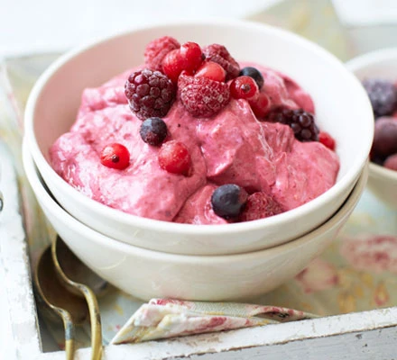

Frozen Berry Yogurt

Description
Three ingredients and two minutes is all you need to whip up this low-fat, low-calorie frozen yogurt treat, which is ideal for eating after exercise or as a quick dessert.
Ingredients
- 250g frozen mixed berry
- 250g 0%-fat Greek yogurt
- 1 tbsp honey or agave syrup
Steps
- Blend berries, yogurt and honey or agave syrup in a food processor for 20 seconds, until it comes together to a smooth ice-cream texture. Scoop into bowls and serve.